Utilisation de machines virtuelles (VM) au lycée⚓︎
Principe⚓︎
Afin de pouvoir travailler sous le système d'exploitation libre GNU / Linux sur les machines du lycée (sous Windows), nous utilisons la solution de virtualisation Proxmox. Elle est fournie par la Région qui exécute Proxmox sur un serveur, cet environnement virtualisé est organisé sous forme de bulle isolée du réseau pédagogique du lycée mais pas d'Internet.
De manière simplifiée :
- un serveur (assez puissant) se trouve dans la salle serveur du lycée ;
- sur ce serveur, un grand nombre de systèmes d'exploitation peuvent être démarrés indépendamment ;
- une VM est disponible par élève : c'est sa machine virtuelle (VM : Virtual Machine) exécutée sur le serveur
Proxmoxdu lycée ; - l'élève se connecte à sa VM depuis un navigateur de n'importe quel ordinateur du lycée ;
- cet ordinateur (le client) ne va faire que recevoir le flux vidéo venu du serveur
Proxmoxet lui envoyer les interactions utilisateurs : clavier et souris ; - en mettant ce flux vidéo en plein écran, on a l'illusion d'être sous un nouveau système d'exploitation. Nous allons donc travailler sous Linux, tout en restant en réalité sur Windows ;
- chaque élève a accès à Internet en entrant ses identifiants et mot de passe habituels du réseau pédagogique sur une application nommée ALCASAR (Application Libre pour le Contrôle d'Acccès Sécurisé et Authentifié au Réseau).
Procédure à suivre pour ouvrir utiliser sa VM⚓︎
-
Ouvrir le navigateur Firefox et entrer l'adresse suivante : https://172.18.107.248:8006
-
Une alerte de sécurité apparaît :
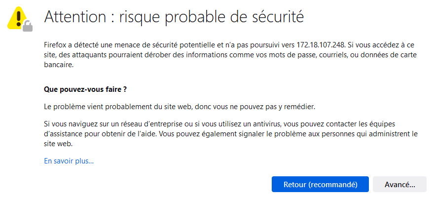
- Cliquer sur
Avancé..., un autre message s'affiche en-dessous :
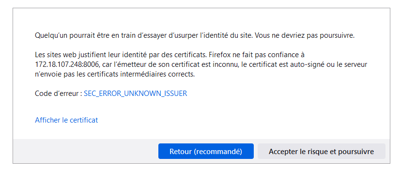
-
Cliquer sur
Accepter le risque et poursuivre -
La fenêtre de connexion
Proxmox VE Logins'ouvre :
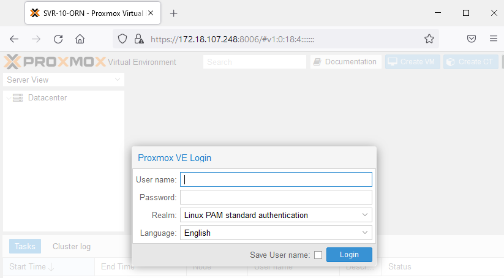
- Avant de renseigner son nom d'utilisateur et son mot de passe, il faut sélectionner dans Realm :
Proxmox VE authentication serveret dans Langue :French, la fenêtre est maintenant intituléeAuthentication Proxmox VEcomme ci-dessous :
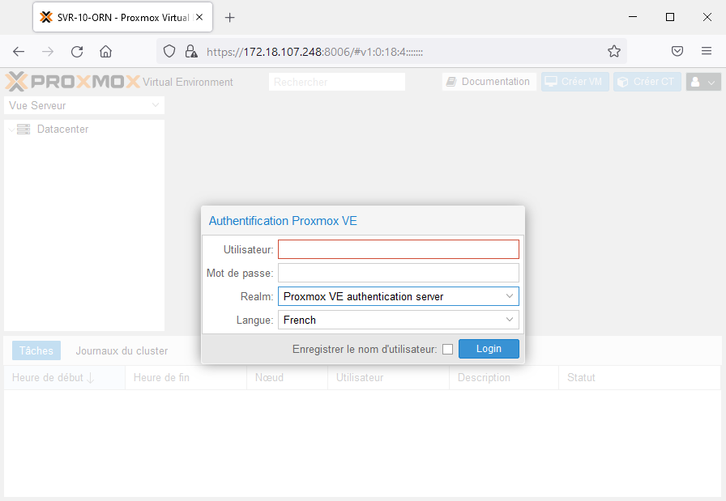
-
Renseigner son nom d'utilisateur
Proxmoxet son mot de passe puis cliquer surLogin(les identifiants Proxmox sont donnés par le prof). -
Un message d'avertissement apparaît ("Aucune clé d'enregistrement valide"). Cliquer
OKpour l'ignorer. -
Dans la colonne de gauche de la page
Proxmox, sélectionner sa machine virtuelle (VM) sousDatacenter > SVR-10-ORN, exemple112(XUB1) -
En haut à droite de la page
Proxmox, cliquer surDémarrerpour démarrer la VM (ou clic droit sur la VM puis sélectionnerDémarrer) -
Cliquer sur le bouton
Consoleet choisirSpice(ou clic droit sur la VM puis sélectionnerConsole). -
La fenêtre ci-dessous s'affiche :
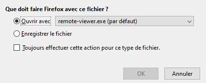
-
Cliquer
OKet attendre un peu. -
Si rien ne se passe au bout d'une dizaine de secondes, fermer la fenêtre et cliquer de nouveau sur
Spicepuis surOK. -
Si tout s'est bien passé, le client de connexion
Spicepermet d'obtenir la distribution Linux : Xubuntu exécutée par la machine virtuelle. -
Renseigner ses identifiants dans la fenêtre de connexion à
Xubuntu, si la connexion n'est pas automatique : - login : test
- mot de passe : nsispeinfo
Ainsi, chaque élève a pour nom d'utilisateur test dans Xubuntu
- Basculer l'affichage en plein écran en cliquant sur 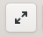 en haut à droite dans
Spice.
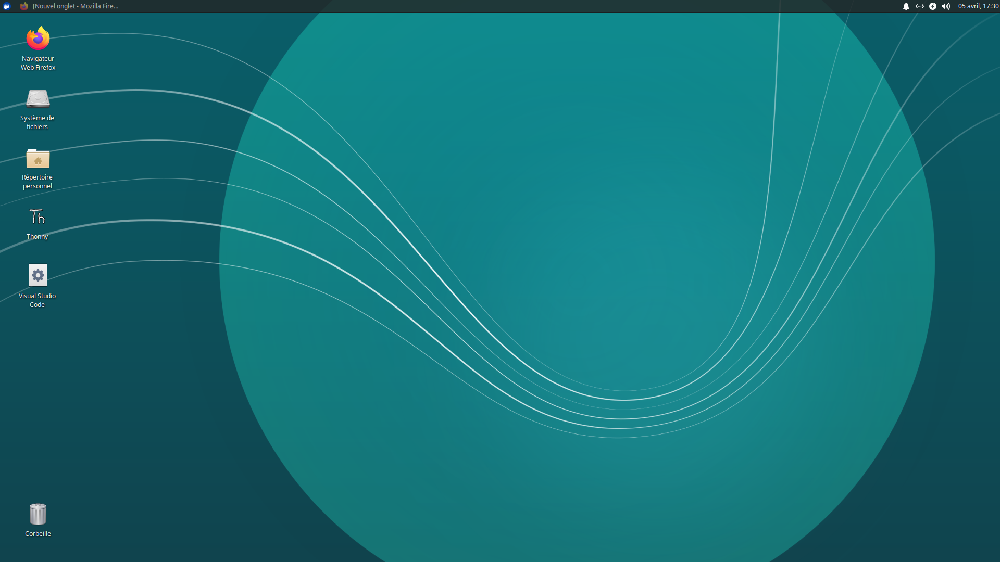
- Au premier lancement de
FirefoxsurXubuntu, cliquer surAfficher la page de connexion du réseau
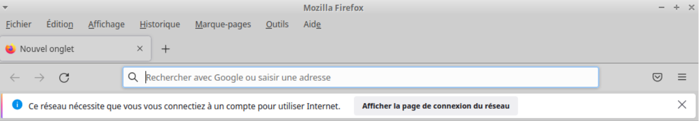
- Remplir ses identifiants de session Windows, pour être autorisé à accéder au réseau Internet par l'intermédiaire d'ALCASAR-ORN :
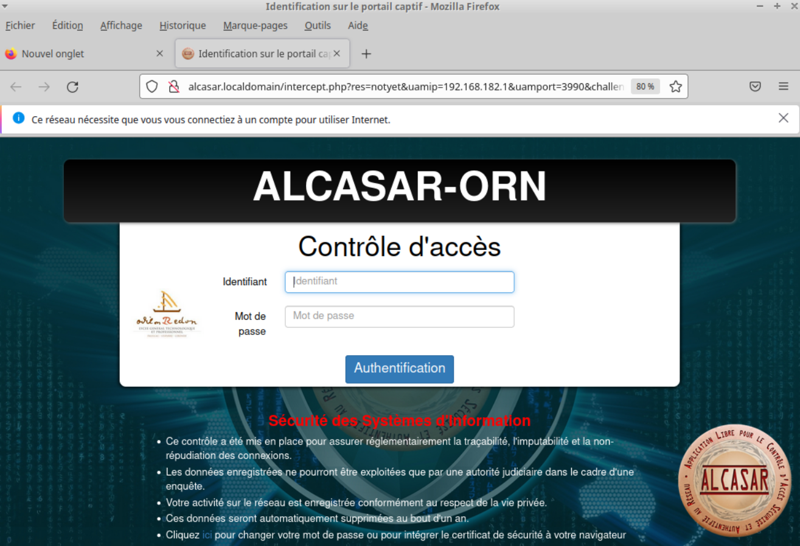
-
S'ouvre alors une fenêtre qui prévient "Attention : vous serez déconnecté si vous fermez cette fenêtre". Utiliser alors un autre onglet du navigateur pour aller sur
Lycée connectépar exemple. -
Pour arrêter une VM, faire simplement une déconnexion en cliquant sur l'icône bleu 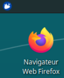 en haut à gauche du bureau Xubuntu puis choisir d'éteindre. Ainsi, dans la page
Proxmox, on verra bien que la VM est stoppée. -
Pour se déconnecter de
Proxmox, aller en haut à droite de la fenêtre et cliquer sur la flêche du bas puis surDéconnexion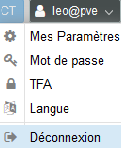
Remarque : dans cette version de Proxmox associée à Windows 10, l'utilisateur n'a pas accès au port USB, on ne peut pas donc utiliser de clé USB ni programmer de carte micro:bit ou Arduino. Pour récupérer ou enregistrer des fichiers, on pourra utiliser Documents et Documents partagés de Lycée connecté.